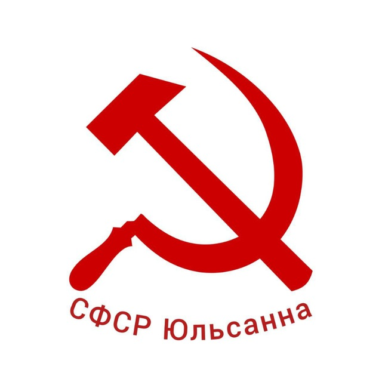
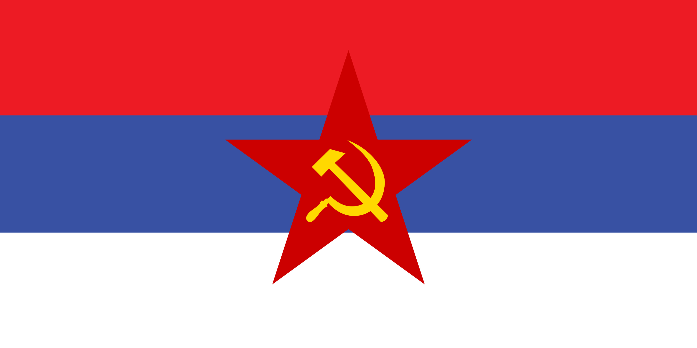

Советская Федеративная Социалистическая Республика Юльсанна
Материал из Википедии СФСРЮ — свободной энциклопедии
1. История образования
1.1 Предпосылки и провозглашение суверенитета (2024 год)
История современного государства берет свое начало в период трансформации постсоветского пространства. Изначально территория функционировала как унитарная Республика Юльсанна в рамках правового поля Союза Независимых Государств (СНГ).
Ключевой точкой отсчета стало принятие 2 ноября 2024 года «Декларации о государственном суверенитете Республики Юльсанна». Документ, подписанный и. о. Председателя Совета Республики Федерального Собрания Д. А. Гордеихиным в городе Поповск, провозгласил:
- Верховенство Конституции и законов Республики Юльсанна на всей её территории.
- Неделимость и неприкосновенность территории.
- Исключительное право народа Юльсанны на владение национальными ресурсами.
- Необходимость разработки новой Конституции и создания независимой правовой системы.
1.2 Федерализация и смена наименования (Январь 2025 года)
Вслед за Декларацией, 2 января 2025 года был принят Закон Республики Юльсанна «Об изменении наименования государства, установлении федеративного устройства и внесении изменений в Конституцию (Основной Закон)».
Согласно этому акту:
- Унитарная Республика была преобразована в федеративное социалистическое государство.
- Официальное наименование изменено на Советская Федеративная Социалистическая Республика Юльсанна (СФСРЮ).
- Были заложены основы федеративного устройства, включающего республики, автономные республики, края и области.
- Законодательно закреплено право субъектов федерации на свободный выход из состава СФСРЮ (в порядке, устанавливаемом Федеративным Договором).
В этот переходный период использовался старый государственный герб СФСРЮ, который символизировал преемственность от предыдущей государственности до утверждения новой символики.
1.3 Конституционное строительство (Апрель — Август 2025 года)
Во исполнение Закона от 2 января 2025 года, Конституционной комиссией был разработан проект Основного Закона.
- 15 апреля 2025 года была принята первая Конституция СФСРЮ, которая закрепила переходный период.
- 14 августа 2025 года состоялось всенародное голосование, по итогам которого была принята действующая Конституция СФСРЮ. Она заменила собой редакцию от апреля 2025 года и окончательно оформила государственный строй.
В период с 2 января 2025 года до утверждения новой символики использовались следующие государственные символы:


2. Федеративное устройство
СФСРЮ является сложносоставным государством. Согласно действующей Конституции, в состав Федерации входят следующие субъекты:
2.1 Республики в составе СФСРЮ
- Республика Кам
- Республика Маргаритка
- Республика Марго
- Зоринская Республика
- Республика Ситникова
2.2 Федеративные республики
- Федеративная республика Боброва
2.3 Автономные республики
- Автономная Республика Эйтингон
- Автономная Республика Натуральнова
2.4 Области и края
- Поповская область
- Алёнкинская область
- Автономная Наташинская область
- Черноморский край
2.5 Города федерального значения
- Поповск
- Алёнкин
2.6 Особые субъекты
- Бештинская империя
3. Государственное устройство
Согласно Разделу I, Главе I Конституции СФСРЮ:
3.1 Форма правления
СФСРЮ — демократическо-коммунистическое федеративное правовое государство с республиканской формой правления. Идеологической основой является Юльсаннизм при гарантии свободы вероисповедания.
3.2 Система разделения властей
Государственная власть осуществляется на основе разделения на законодательную, исполнительную и судебную:
- Законодательная власть: Осуществляется Советом Федерации. Высший представительный орган, принимающий федеральные законы и утверждающий бюджет. Председатель Совета Федерации — Алёна Юрьевна Филина.
- Исполнительная власть: Осуществляется Правительством СФСРЮ под руководством Президента. Глава Правительства — Елизавета Николаевна Савельева.
- Судебная власть: Осуществляется независимыми судами на основе Конституции и федеральных законов.
3.3 Президент СФСРЮ
Глава государства, гарант Конституции, прав и свобод человека и гражданина. Избирается сроком на 1 год.
Действующий Президент (с 3 февраля 2025 года, и.о. с 2 января) — Дмитрий Алексеевич Гордеихин.
3.4 Вице-президент СФСРЮ
Второе лицо государства, гарант Конституции, прав и свобод человека и гражданина. Избирается вместе с Президентом СФСРЮ сроком на 1 год.
Долность Вице-президента СФСРЮ вакантна с 15 апреля 2026 года.
3.5 Правовая преемственность
СФСРЮ признается правопреемником Союза Независимых Государств на своей территории (Статья 51 Конституции). Государственные языки: русский и юльсанниский.